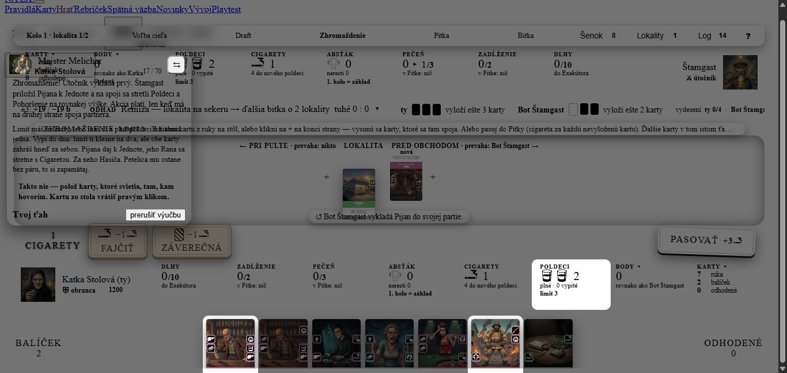
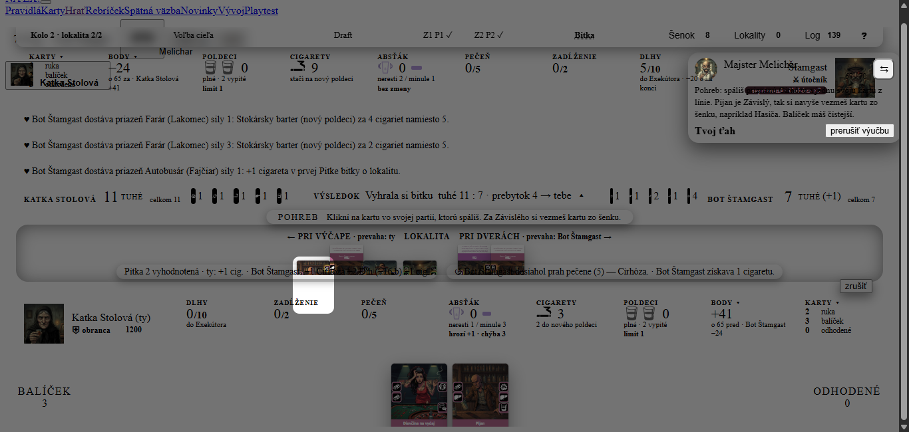
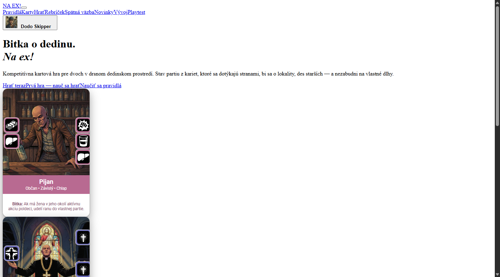
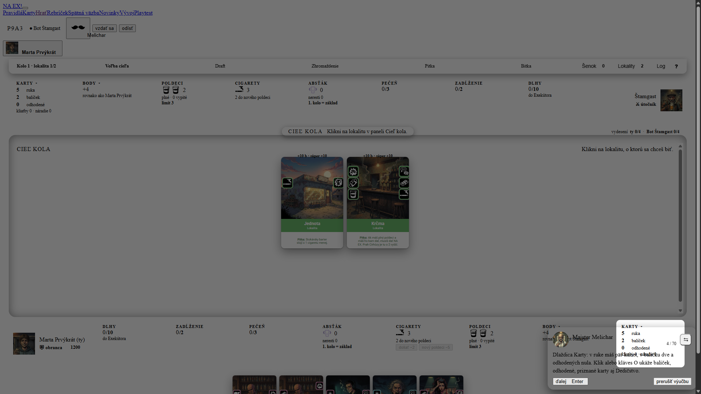
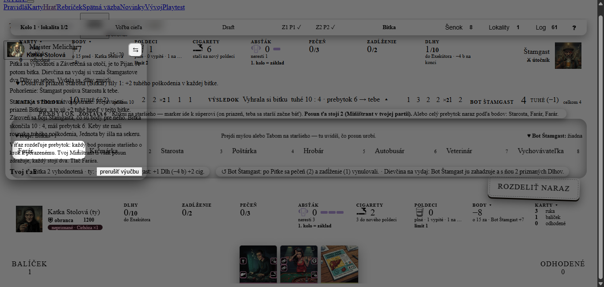
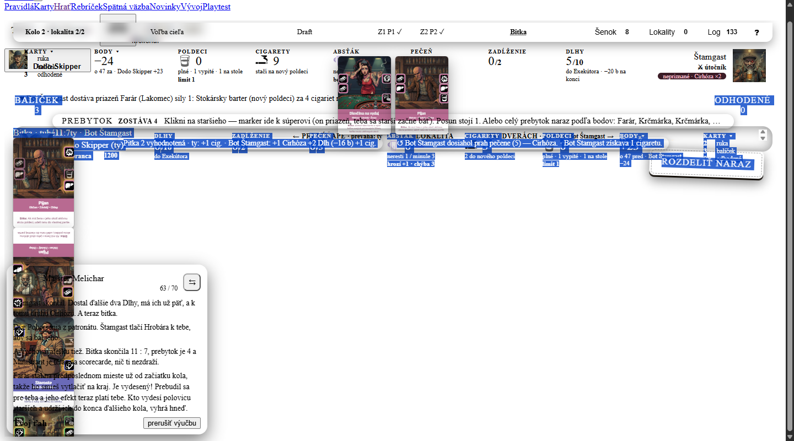

Playtest výučby Prvá hra · 20261023-161148
1. Verdikt
Áno po opravách. Všetci traja výučbu prešli (Katka 16,7 min, Dodo 11,8 min, Marta 11,6 min), hlášky Melichara sa páčili a slovník (poldeci, cigarety, limit, NA EX, bitka) sa naučil spoľahlivo. Ale priemer V1–V10 je len 4,7 z 10, všetci traja si po nej tipujú ~35 % hry („viem klikať, nie hrať“) a 15 odmietnutých ťahov na troch rovnakých miestach ukazuje chybu scenára. Tri najdôležitejšie opravy:
- Potvrdenie ťahu s viacerými kartami (kroky 17, 48, 58): výučba odmietne potvrdenie po prvej karte a hláška nepovie, čo chýba. Katka stratila 265 s a 40 akcií, Dodo 151 s a 29 akcií.
- Rozbitý CSS v
apps/web/src/hra/hra.css(commit7bf9cee): stránka vyzerá bez štýlov a pravdepodobne z toho plynie aj „presvitajúca“ bublina. Treba opraviť pred akýmkoľvek ďalším playtestom, inak sa UI nálezy nedajú posúdiť. - Bublina: nepriehľadná, nezakrývať zvýraznený prvok, nehromadiť 3–4 odseky (až 133 slov naraz), vysvetliť každý nový pojem pri prvom použití.
2. Nováčikovia
| Postava | Rozlíšenie | Dokončil | Dĺžka | Akcií | Chyby servera | Test pochopenia |
|---|---|---|---|---|---|---|
| Katka Stolová — projektová manažérka, systematická (zameranie: pochopenie hry) | 1366×650 | krok 70 z 70 dosiahnutý, záverečné „ďalej“ neklikla (suhrn: nedokončená) | 16,7 min | 162 | 7 (6× krok 17, 1× krok 48) | 3 správne, 5 čiastočne |
| Dodo Skipper — študent, netrpezlivý (zameranie: ovládanie a tempo) | 1440×800 | áno, 70 z 70 | 11,8 min | 140 | 6 (4× krok 17, 1× 48, 1× 58) | 3 správne, 5 čiastočne |
| Marta Prvýkrát — učiteľka na dôchodku, poctivá (zameranie: zrozumiteľnosť textu) | 1920×1080 | áno, 70 z 70 | 11,6 min | 113 | 2 (1× krok 17, 1× 48) | 2 správne, 6 čiastočne |
3. Známky V1–V10
| Kritérium | Katka | Dodo | Marta | Priemer ▾ |
|---|---|---|---|---|
| V1 Pochopenie hry | 4Katka: Poznám slová a postup, nie dôvody; bitka 10:4 sa vyhodnotila bez výpočtu (k. 35), patronát som neodvodila (k. 46). | 4Dodo: Viem vykonať pokyny, nie hrať samostatne; Pohoršenie, Viera, Petelica, prevaha si nepamätám. | 4Marta: Viem klikať, nie hrať; cieľ a body sú jasné, mechanika (spoje, prevaha, Pitka) zostala v hmle. | 4,0 |
| V2 Jasnosť pokynov | 5Katka: Kroky 6, 9, 10, 52 jasné; 17 a 47 nie — zaseknutie na ~25 akcií, kým som nepochopila, že treba položiť všetky svietiace karty a až potom potvrdiť. | 4Dodo: Väčšinou jasné, čo svieti, ale pasce v krokoch 17, 48, 58 a 67 (zakrytý stôl). | 6Marta: Zvýraznenie skoro vždy ukázalo správne miesto; zlyhali 17 a 48 („Takto nie“ bez vysvetlenia), 43 („Ty šetríš“) a 67 (cesta zo starších na stôl). | 5,0 |
| V3 Vysvetlenie „prečo“ | 3Katka: Hlavne príkazy: prečo tieto štyri na Smetisko (7, 40), prečo Farár dvakrát (36), prečo pasovať. Dobré: k. 55 „najlepšia odpoveď žiadna“. | 5Dodo: Jedno dobré „prečo“ pri NA EX a pasovaní, inak príkazy v múre textu. | 5Marta: Dobré: Krčma núti (51, 55), pas za cigaretu (21). Inak sa slová používajú skôr, než sa vysvetlia (Pitka, Dedičstvo, spoj, prevaha, scorecard). | 4,3 |
| V4 Bublina Melichara | 4Katka: 8–12 riadkov so 6 novými pojmami (19, 35, 46); v rohu zakrýva môj panel, staršieho Farára (35) a Štamgastov avatar; tlačidlo ďalej mení miesto. | 3Dodo: Odseky sa kopia (3–4 naraz), text pretiekol cez okraj (snímky 095, 121), vedie sa cez môj bar a tlačidlá; čítal som len prvú vetu. | 3Marta: Bublina nemá nepriehľadné pozadie, text sa prelína s textom pod ňou; kroky 17, 25, 27, 35, 63 majú 90–190 slov; zakrýva zvýraznený prvok (k. 4). | 3,3 |
| V5 Zvýraznenie | 5Katka: Väčšinou presné (Lokality, Body, Jednota); Pijan v kroku 67 je pod logom; v krokoch 17 a 43 svietilo na nesprávnu vec (Poldeci) alebo nič. | 6Dodo: Presné a prežije posun kariet, ale svieti aj to, čo sa nedá kliknúť (Poldeci v 17), a nesvieti správna kópia karty (58). | 7Marta: Presné a pomáha; svieti viac vecí naraz bez poradia (17), nesvieti pas (50) a bublina prekrýva zvýraznenú dlaždicu (4). | 6,0 |
| V6 Ovládanie | 4Katka: Súradnice slotov sa menia po každej karte (7, 40); klik na stmavený okraj aktivuje prvky pod ním (otvorilo Karty omylom); „Takto nie“ nehovorí prečo; Enter bez účinku. | 4Dodo: Každá karta inak: ťahanie, klik+plus, klik na dlaždicu; zlý ťah dostane jednu vetu bez toho, čo je zle. | 5Marta: Ťahanie, klik na +, tlačidlo potvrdiť — pri každom kroku inak; „ďalej na stôl“ nefungovalo; po zlom potvrdení len „Takto nie“. | 4,3 |
| V7 Tempo a dĺžka | 5Katka: 70 krokov je dlhé, ale plynulé; ťažké kroky príliš husté (19, 35, 46), ľahké (pas, hotovo) zbytočne rozbité. | 4Dodo: 70 krokov, ~140 akcií; kolo 2 opakuje kolo 1; chýba ponuka „preskoč“. | 5Marta: Prvé kroky pomalé, od Zhromaždenia rýchlosť aj dĺžka textov stúpne; čísla krokov sa preskakujú. | 4,7 |
| V8 Tón a postava Melichara | 6Katka: Humorný a priateľský („Na zdravie!“); občas sa tón stratí v zozname faktov. | 7Dodo: „Na zdravie!“, „najlepšia odpoveď žiadna“ sú fajn; hlášky sú skôr suché, v bubline encyklopédia. | 7Marta: Hospodský tón sedí; skôr komentuje, než vysvetľuje ako učiteľ. | 6,7 |
| V9 Čitateľnosť stola | 3Katka: Na 1366×650 sa log, pokyn a hrozba prekrývajú medzi sebou aj s kartami; karty v ruke orezané; riadky bitky skrátené na „…“. | 4Dodo: Stôl sa posúva (±23 až 100 px), v Pohrebe panel starších zakryl karty, „duch“ kariet po ťahaní (snímka 121). | 4Marta: Veľa malých písmen, riadky „Odhad“, „Výsledok“ sa menia; menu hore bez štýlov; zväčšená karta pri myši zakrýva stôl. | 3,7 |
| V10 Chuť hrať | 5Katka: Zaujímavé a tematické, ale „nerozumiem prečo vyhrávam o 86 bodov“ ma k partii neláka. | 5Dodo: Hra vyzerá hlbšia než Hearthstone, ale po 70 krokoch som unavený. | 6Marta: Zaujalo ma „62 : −24“, aj keď neviem ako; chcem skúsiť proti botovi. | 5,3 |
Zhodli sa na najslabšom: bublina (V4: 4/3/3) a čitateľnosť stola (V9: 3/4/4), a na najlepšom: tón Melichara (V8: 6/7/7) a zvýraznenie (V5: 5/6/7). Rozišli sa pri „prečo“ (V3: Dodo a Marta 5, Katka 3) — Dodo číta len prvú vetu a „prečo“ pri NA EX a pase mu stačilo; Katka, ktorá chcela pochopiť hru, ho videla v 3–4 krokoch z 70. Marta (najvyšší priemer 5,2) mala najmenej zaseknutí (2 chyby servera) a najväčšie rozlíšenie; Katka na 1366×650 má najhoršiu čitateľnosť stola (V9 3).
4. Test pochopenia
Odpovede nováčikov boli overené proti docs/PRAVIDLA.md. Žiadna odpoveď nebola vyslovene zlá — chyby sú len zjednodušenia a jedna nepresnosť (Dodo: pas patrí do Zhromaždenia, nie do Pitky, §7). Spolu: 8 správne, 16 čiastočne, 0 zle, 0 nevie z 24 odpovedí. Sebahodnotenie: všetci traja ~35 %; na partiu s človekom by si netrúfol nikto, na bota „možno s ťahákom“ (Katka, Dodo) alebo „skúsila by som“ (Marta).
| Otázka | Katka | Dodo | Marta |
|---|---|---|---|
| 1 Cieľ hry | správnebody: lokality, starší, cigarety; Dlhy a Cirhóza berú; spomenula aj okamžitú výhru vydesením polovice starších (§1) | čiastočnebody správne; nevie, ako sa rátali (62 : −24); okamžitú výhru vydesením nespomenul | čiastočnebody správne, starší „nejako“; vydesenie a ako sa body rátajú nevie |
| 2 Priebeh kola | správnecieľ → šenok → Zhromaždenie → Pitka → ďalšie Zhromaždenie a Pitka → bitka → prebytok; poradie len približne | čiastočnepozná šenok, Zhromaždenie, Pitku, bitku; pas zaradil do Pitky (je v Zhromaždení, §7); druhé Zhromaždenie/Pitka chýba | čiastočneporadie Z1/P1/Z2/P2 si zapamätala len čiastočne |
| 3 Zhromaždenie | čiastočnevykladá karty, limit = plné poldeci + 1 (§5) správne; prečo je spoj dôležitý nevie | čiastočnelimit správne; „prečo spoj a na ktorú stranu“ nevie | čiastočnelimit správne; čo sa „spáruje“ nevie |
| 4 Pitka a NA EX | čiastočneNA EX správne (ruší aktívne, zdvojí neaktívne, §5); Pitku opísala len ako plnenie pečene a zadĺženia; kedy sa oplatí, nevie | správneNA EX správne, Pitka = pije/fajčí/NA EX; kedy sa oplatí nevie | čiastočnenevie, ktoré akcie sa zrušia a ktoré zdvojnásobia |
| 5 Bitka | čiastočneporovná sa tuhé; nevie, ako číslo vzniká; remízu (sekera) nespomenula | správnetuhé, víťaz berie lokalitu, remíza = sekera, prebytok medzi starších (§8) | správnetuhé, rozdiel = prebytok, rovnosť = sekera; nevie, ako číslo vzniká |
| 6 Starší | čiastočne8 autorít, marker priazne a strachu, strach dáva body, patronát; farby (zóny) nevie | čiastočnestrach dáva body tomu, koho sa boja; presnú tabuľku nevie | čiastočnemarkery ku mne/k súperovi, strach = body, prebytok posúva; hlbšie nevie |
| 7 Poldeci a cigarety | správnepoldeci = limit a NA EX; cigarety = šenok, fajčenie, body, patronát, Dedičstvo, nový poldeci | správnepoldeci = limit a NA EX; cigarety = šenok, fajčenie, body na konci, nový poldeci | správnepoldeci = poháre, limit, NA EX; cigarety = šenok, Dedičstvo, fajčenie, body na konci |
| 8 Čo by urobil inak | čiastočnenepasovala by a nešetrila bez plánu; stratégiu nepozná, „výučba mi každý ťah nadiktovala“ | čiastočnenešiel by slepo za Melicharom, nevyhodil by Cirhózu hneď; vlastnú stratégiu nemá | čiastočnepotvrdzovala by až po všetkých kartách; nepriznávala by Cirhózu skoro; pýtala by sa vnuka |
Čo výučba naučila spoľahlivo
- Cieľ „viac bodov na konci“ a odkiaľ body idú (3/3), limit vykladania = plné poldeci + 1 (3/3), čo sú poldeci a cigarety a na čo sú (3/3; všetci traja správne), bitka porovná tuhé poškodenie a rovnosť ide na sekeru (Dodo, Marta), definícia NA EX (Katka, Dodo).
- Slovník a orientácia v stole: všetci vedia pomenovať fázy a dlaždice.
Čo nenaučila nikoho
- Prečo sa spoj oplatí (Rana + Cigareta, čo to dá) — 3/3 „neviem“ (Katka, Dodo, Marta).
- Kedy sa NA EX oplatí a ktoré akcie sa zruší/zdvojí na konkrétnej karte (Katka, Dodo, Marta).
- Ako vzniká číslo v bitke (10:4) — Katka a Marta (Dodo to nespomenul).
- Premenu bitky na stratégiu: Q8 „čo by som urobil inak“ — nikto nemá vlastný plán, všetci len opakujú, čo im Melichar nadiktoval.
- Okamžitú výhru vydesením (Dodo, Marta) a premenlivý počet Pitiek (1–4, §7) — nespomenul nikto.
5. Mapa krokov
Bunka = jasnosť z denníka (1–5, „–“ = bez záznamu). Zelená: bez chyby, žltá: chyba servera alebo viac ako 3 akcie, červená ⚠: ZASEKNUTIE v denníku, sivá: krok bez záznamu. Kurzor nad bunkou ukáže akcie, chyby a sekundy. Krok je zafarbený podľa suhrn.json; kroky bota sa preskakujú v jednom kliku (číslovanie „skáče“).
| Krok | id | Melichar | Katka | Dodo | Marta |
|---|---|---|---|---|---|
| 1 | i-vitaj | Vitaj v krčme! Som majster Melichar. Zahráš si so Štamgastom… | 4 | 4 | 4 |
| 2 | i-ciel | Vyhráva, kto má na konci viac bodov. Body dávajú vybojované … | 4 | 3 | 3 |
| 3 | i-bar | Dole je tvoj bar. Poldeci máš dva plné a limit vykladania je… | 3 | 2 | 2 |
| 4 | i-karty | Dlaždica Karty: v ruke máš päť kariet, v balíčku dve a odhod… | 3 | 4 | 2 |
| 5 | i-body | Klikni na Body. Namiesto kariet uvidíš líniu starších: osem … | 3 | 3 | 3 |
| 6 | k0 | Ty si obranca, tak cieľ kola vyberáš ty. Vezmi Jednotu a nec… | 2 | 4 | 2 |
| 7 | k1 | Stavba šenku. Z ôsmich kariet dáš štyri na Smetisko (pod pul… | 3 | 3 | 4 |
| 8 | k2 | Štamgast vyberal naraz s tebou. Teraz vidíte obaja celý šeno… | – | – | – |
| 9 | k3 | Útočník berie prvý. Jedna karta stojí cigaretu, dve stoja tr… | 3 | 4 | 3 |
| 10 | k4 | Vezmi Hasiča. Má Petelicu, to sú tri rany naraz. | 3 | 4 | 3 |
| 11 | k5 | Štamgast vzal Recidivistu. Aj ten má Petelicu. | – | – | – |
| 12 | k6 | A teraz Krabičku cigariet. Je to Nástroj: neskôr ju dáš do D… | 3 | 5 | 3 |
| 13 | k7 | Štamgast už brať nechce. Kto prestane, tomu druhému ostáva u… | 3 | 5 | – |
| 14 | k8 | Posledná cigareta sa ti ešte zíde, tak už neber (P). Šenok s… | 3 | 5 | 3 |
| 15 | i-skratky | Ešte skratky: K znamená končím či hotovo, P pas, N NA EX, O … | 4 | 4 | 2 |
| 16 | k9 | Zhromaždenie! Útočník vykladá prvý. Štamgast priložil Pijana… | – | – | – |
| 17 | k10 | Limit máš tri karty, lebo máš dva plné poldeci a k tomu jedn… | 1 ⚠ | 1 ⚠ | 2 ⚠ |
| 18 | k11 | Štamgast ti podstrčil Dvojčatá na tvoju stranu. Karta ostáva… | – | – | – |
| 19 | k12 | Limit máš minutý, ale Nástroj do Dedičstva limit nemíňa. Pus… | 1 | 2 | 1 |
| 20 | k13 | Štamgast pridal Dievčinu na vydaj, to je jeho druhé Pohoršen… | – | 4 | – |
| 21 | k14 | Viac nevyložíš, tak pasuj (P). Pas dáva cigaretu za každú ka… | 3 | 4 | 3 |
| 22 | k15 | Štamgast pasuje tiež. Ide sa do Pitky. | – | 4 | – |
| 23 | k16 | Pitka! Začína obranca. Pozri riadok Hrozba na stole: NA EX n… | 2 | 3 | 2 |
| 24 | k17 | Na NA EX smie súper hneď odpovedať jednou kartou mimo limitu… | 2 | 3 | – |
| 25 | k18 | Útočník má posledné slovo, ale Štamgast si poldeci šetrí. Pi… | 2 | 1 | 1 |
| 26 | k19 | Druhé Zhromaždenie. Štamgast pasuje a za tri nevyložené kart… | – | 3 | – |
| 27 | k20 | Milujúca manželka je Občan aj kliatba. Priznaj ju, pusti ju … | 2 | 3 | 2 |
| 28 | k21 | Cirhózu zatiaľ nepriznávaj, priznaná by dala Štamgastovi ran… | 3 | 2 | 2 ⚠ |
| 29 | k22 | Poldeci už nemáš, ale cigaretu áno. Vyfajč ju a hneď si dobe… | 3 | 3 | 3 |
| 30 | k23 | Teraz má Štamgast posledné slovo: NA EX na vlastné Dvojčatá.… | 3 | 3 | – |
| 31 | k24 | Tvoju stranu blokuje Záverečná, tak Miňištranta daj na Štamg… | 3 | 2 | 2 |
| 32 | k25 | Pitka sa vyhodnotí a Záverečná sa otočí, je to Pijan. A poto… | – | 2 | – |
| 33 | k26 | Pohoršenie: Štamgast posúva Starostu k tebe. | 2 | 2 | – |
| 34 | k27 | Starosta je v žltom na tvojej strane. Prejavuje ti priazeň B… | 2 | 2 | – |
| 35 | k28 | Víťaz rozdeľuje prebytok: každý bod posunie staršieho o krok… | 2 | 2 | 1 |
| 36 | k29 | Ešte raz Farár. | 2 | 4 | 3 |
| 37 | k30 | Farár je v oranžovom. Bojí sa ťa na úrovni dva a to sú body … | 2 | 4 | 2 |
| 38 | i-log | Prvé kolo máš za sebou a vedieš 11 : 7. Hore pod tlačidlom L… | 3 | 4 | 3 |
| 39 | k31 | Vyhral si, takže si znova obranca a vyberáš. Ostala Krčma a … | 3 | 4 | 2 |
| 40 | k32 | Znova stavba šenku. Tentoraz nebudeme kupovať, cigarety pôjd… | 3 | 4 | 4 |
| 41 | k33 | Štamgast vybral svoje štyri. | – | 4 | – |
| 42 | k34 | Útočník berie prvý: Štamgast si kúpil Psa. | 2 | 3 | – |
| 43 | k35 | Ty šetríš. Dve cigarety budeš o chvíľu potrebovať. | 2 | 3 | 2 |
| 44 | k36 | Štamgast skončil s branim. | – | 3 | – |
| 45 | k37 | Patronát! Kto má priazeň staršieho, smie si ho vziať do ruky… | 2 | 2 | 2 |
| 46 | k38 | Starosta ti prejavuje priazeň, tak si ho vezmi. Na jeho mies… | 2 | 2 | 2 |
| 47 | k39 | Štamgast vypil a zahral dve karty naraz: Psa a Pijana. | 2 | 2 | – |
| 48 | k40 | Teraz Cirhózu priznaj. Nepriznaná by ťa na konci stála body,… | 2 | 3 | 2 ⚠ |
| 49 | k41 | Štamgast pasuje. | – | 3 | – |
| 50 | k42 | Pasuj aj ty. Za kartu, ktorú si ešte smel vyložiť, dostaneš … | 3 | 5 | 3 |
| 51 | k43 | Krčma ťa núti: máš plný poldeci, takže NA EX musíš dať. Daj … | 3 | 4 | 3 |
| 52 | k44 | Štamgast odpovedal Pijanom k Starostovi: spároval mu Poldeci… | 3 | 4 | – |
| 53 | k45 | Hotovo (K). Je to nevratné, posledné slovo má útočník. | 3 | 4 | 3 |
| 54 | k46 | Krčma núti aj jeho. NA EX na vlastného Pijana: o dve rany vi… | – | 4 | – |
| 55 | k47 | Odpovedať by si mohol, ale každá tvoja karta by mu ten Dlh a… | 4 | 4 | 4 |
| 56 | k48 | No vidíš: dva Dlhy a Cirhóza. Štamgast má priznané už tri Dl… | 4 | 4 | – |
| 57 | k49 | Štamgast pasuje. | 4 | 2 | – |
| 58 | k50 | Vylož ešte Pijana, po bitke sa ti zíde. Potom za teba hra pa… | 3 | 2 ⚠ | 3 |
| 59 | k51 | Starosta má efekt: v Pitke za cigaretu vymení kartu z ruky z… | 3 | 4 | 3 |
| 60 | k52 | Štamgast skončil. Dostal ďalšie dva Dlhy, má ich už päť, a k… | – | 3 | – |
| 61 | k53 | Dve Pohoršenia z patronátu. Štamgast tlačí Hrobára k tebe, a… | 2 | 3 | 1 |
| 62 | k54 | A Vychovávateľku tiež. Bitka skončila 11 : 7, prebytok je 4 … | 2 | 3 | 1 |
| 63 | k55 | Farár stál na predposlednom mieste už od začiatku kola, takž… | 2 | 2 | 1 |
| 64 | k56 | Zvyšné tri body daj Autobusárovi. | 2 | 2 | 2 |
| 65 | k57 | Ešte raz. | 2 | 2 | 2 |
| 66 | k58 | A posledný. Autobusár je v oranžovom, bojí sa ťa. | 2 | 2 | 2 |
| 67 | k59 | Pohreb: spáliš priznanú Cirhózu a jednu svoju kartu z línie.… | 1 ⚠ | 2 ⚠ | 2 ⚠ |
| 68 | i-abstak | Ešte jedna vec. Na konci kola si dostal Absťák: v tomto kole… | 3 | 2 | 2 |
| 69 | i-koniec | Koniec! Vyhral si 62 : −24. Lokality ti dali 28, vydesený Fa… | 4 | 2 | 3 |
| 70 | i-dovidenia | To je celá krčma. Štamgast sa z toho vyspí. Teraz sa skús po… | 4 | 4 | 4 |
6. Zaseknutia
Krok 17 · k10 — potvrdenie po prvej karte scenárUI výučby
- Chcel
- Podľa Melichara položiť Pijana k Jednote a potvrdiť.
- Stalo sa
- Server odmietol ťah (6× Katka, 4× Dodo, 1× Marta): „Vo výučbe teraz urob toto: Limit máš tri karty, lebo máš dva plné poldeci a k tomu jedna. Vypi do dna… Pijana daj k Jednote… Za neho Hasiča.“ UI to skrátilo na „Takto nie — polož karty, ktoré svietia, tam, kam hovorím. Kartu zo stola vrátiš pravým klikom.“ Scenár (
prva-hra.json,k10) očakáva jeden ťah z troch krokov (vypiť, Pijan, Hasič) a čiastočný ťah neprijme. Katka: 40 akcií / 265 s / 6 chýb, Dodo: 29 / 151 s / 4, Marta: 5 / 38 s / 1. Katka skúšala zvýraznené Poldeci (nič sa nestalo), Esc, K, zoznam skratiek. - Príčina
- V hre je legálne potvrdiť po jednej karte; výučba to blokuje, ale text pred tým nepovie „polož obe a až potom potvrď“. Zvýraznenie navyše svieti na dlaždici Poldeci, ktorú netreba klikať (Katka aj Dodo), a „Vypi do dna“ znie ako samostatná akcia. Chyba: scenára a UI (
kratkaChybavVyucba.tsxpretahje všeobecná a nepovie, čo chýba); hra je v poriadku. - Oprava
- Prvá veta bubliny: „Polož Pijana k Jednote a Hasiča na druhú stranu, až potom potvrď oboch naraz.“ Chyba po potvrdení má vymenovať, čo ešte nie je položené („Chýba ešte Hasič“); Poldeci nezvýrazňovať.

Krok 48 · k40 — Cirhóza + Starosta naraz scenárUI výučby
- Stalo sa
- Rovnaká pasca (
tahs dvoma kartami: priznať Cirhózu, Starostu k Krčme). Odmietnutie hlásili všetci traja (po 1×), Katka 5 akcií / 34 s, Dodo 6 / 18 s, Marta 6 / 24 s. Nikto sa z kroku 17 nepoučil, hláška „Takto nie“ pravidlo nevysvetlí. - Oprava
- Rovnaká ako pri kroku 17; v kroku 17 aj 48 navyše jeden všeobecný hint: „Keď výučba hovorí o dvoch kartách, polož obe, potom potvrď.“
Krok 58 · k50 — dva rovnaké Pijany v ruke scenár
- Stalo sa
- Len Dodo (1 chyba, 7 akcií, 40 s): v ruke dve karty Pijan (rôzne varianty
pijan/1/0apijan/0/2), scenár prijal len jednu (ruka:pijan), správna kópia nesvietila. - Oprava
- Prijať obe kópie alebo zvýrazniť konkrétnu; v texte „vylož Pijana s … na hrane“.
Krok 67 · k59 — Pohreb: cesta späť na stôl a skrytý cieľ UI výučby
- Stalo sa
- 3/3 trvalo 8 akcií a 38–59 s bez chyby servera. Katka klikla trikrát mimo, zvýraznený Pijan bol pod pruhmi logu (snímka 153); Dodo hlási zakrytý stôl panelom starších; Marta klikla 2× na „← ďalej na stôl“ bez reakcie a vrátila sa až klikom na dlaždicu Body. Reakciu tlačidla z logov overiť nemožno (v kóde:
ls-tlacidlovHernaPlocha.tsx) — treba rozlíšiť, či ide o chybu alebo o skrytie bublinou. - Oprava
- Po poslednom rozdelení prebytku vrátiť hráča na stôl automaticky (platí aj po kroku 5/6, kde pohľad starších ostal otvorený — hlásili Katka a Marta); zvýraznenie Pijana vyniesť nad log.

Krok 28 · k21 — Záverečná: klik na kartu v ruke nič nerobí UI výučby
- Stalo sa
- 3/3 po 4–6 akcií bez chyby; klik na kartu nerobí nič, treba ťahať; Marta potiahla 2× neúspešne, pomohol klik na „+“ a potom na kartu. Dodo: „každá karta inak“.
- Oprava
- Povedať v texte „potiahni Pijana na Záverečnú“, alebo prijať klik na kartu aj klik na cieľ.
Krok 7 a 40 · k1, k32 — Smetisko: sloty sa posúvajú UI výučby
- Stalo sa
- Bez chýb servera, ale 5–9 akcií (Dodo 9 / 39 s, Katka 6, Marta 5; krok 40 po 5–7). Po každej položenej karte sa súradnice cieľa posunú (Katka, Dodo); Dodo vybral Psa namiesto Záhradkára a zlý výber neprešiel bez hlášky.
Kroky 43 a 50 · k35, k42 — žiadny pokyn, nič nesvieti scenár
- Stalo sa
- V
prva-hra.jsonnemajúk35(„Ty šetríš…“,draftStop) anik42(„Pasuj aj ty“,pass) polezvyraznit. Katka a Marta hľadali „už neťahám“ podľa pocitu; Marta nenašla Pasovať (Dodo použil kláves P). Text k35 nehovorí, čo urobiť. - Oprava
- Doplniť
zvyraznit(tlacidlo:draft-stop,tlacidlo:pas) a pokyn „Klikni Už neťahám.“
Krok 5–6 · i-body, k0 — obrazovka starších ostane otvorená UI výučby
- Stalo sa
- Katka (4 akcie / 16 s) aj Marta: bublina vpravo dole zakryla zvýraznené Body, po kroku 5 ostal otvorený pohľad starších a nikto nepovedal, že sa treba vrátiť (Katka klikla omylom na „Balíček“). Dodo: Enter pustil krok 5 ďalej bez kliku — výučba sa tak dá preskočiť. Katka a Marta hlásia opak: Enter po kliku myšou nereaguje (zrejme zmena fokusu).
7. UI a UX
Rozbitý CSS (3/3: Dodo snímky 001–002, Marta 001, Katka 001)
Reálna chyba UI, súvisí s varovaniami buildu. Snímka 001 je celá bez štýlov (odkazy v jednom riadku, holé tlačidlo hráča, obrázky kariet po sebe), snímka 002 má štýlovaný stôl, ale holé hlavné menu a „Melichar/Dodo Skipper“ cez seba. Build (vite build) hlási Expected "}" to go with "{" a esbuild preto CSS nezmenšil (.sb { je len prvé miesto, kde to spadne — viď dist, kde je CSS vypísané s medzerami).
Príčina: commit 7bf9cee („Počítadlo bitky“) vložil 230 riadkov doprostred @keyframes moment-odchod v apps/web/src/hra/hra.css (okolo riadku 6270: to { opacity: 0; a hneď komentár /* ---- Počítadlo bitky …). Zvyšok bloku (} } a otvorenie @media (prefers-reduced-motion)) skončil na konci súboru, takže hra.css má 1030 { a 1029 }. Všetko, čo prehliadač za týmto miestom v zlúčenom CSS číta (zvyšok hra.css a pravdepodobne aj ďalšie súbory v poradí bundlu), končí uväznené vo vnútri keyframes a ignoruje sa. Pravdepodobne tým vzniká aj „presvitajúca“ bublina, preskakujúci stôl a nedôsledne štýlované ovládanie — po oprave overiť, kým sa UI nálezy nižšie berú ako definitívne. Oprava: zavrieť @keyframes moment-odchod pred komentárom a vrátiť @media pred .pocitadlo-bitky (malá, Developer).

Bublina Melichara (3/3)
- Zakrýva zvýraznený prvok: Marta snímka 008 (dlaždica Karty cez bublinu), Katka kroky 4–5 (Body), 35 (Farár), od kroku 36 Štamgastov avatar (snímka 096).
- Presvitá a kopí staré odseky (Marta aj Dodo; Dodo snímky 095, 121 — text pretiekol): bot komentáre ostávajú v bubline do ďalšieho kroku hráča (
predtymvVyucbaStol); skupina k16 má 133 slov v 4 odsekoch. - Tlačidlo ⇆ (presunúť) nevysvetlené; po presune zakryje iný prvok (Katka, Marta). Dve tlačidlá „ďalej“ naraz (Marta, snímka 058).

Log a pruhy cez stôl (Katka, Dodo)
Na 1366×650 sa pruhy „ZHROMAŽDENIE LIMIT 3…“, „Bot Štamgast vykladá…“, „Pitka vyhodnotená…“ prekrývajú s bublinou a s kartami línie (Katka snímky 035, 080, 138, 149); karty v ruke sú orezané; riadok bitky skrátený na „…“ (snímka 094).

Duchovia kariet a označovanie textu (Dodo, Katka)
Ťahanie myšou označí text na celej stránke (modro) a po ťahu ostáva „duch“ karty pod bublinou (Dodo snímka 121). Dodo: stôl sa v kole 2 posunie o 23 px; Marta: rozloženie sa pri animácii rozsype.

Ostatné
- Klik na stmavený okraj aktivuje prvky pod ním (Katka: otvorilo Karty/Balíček).
- Okno „Lokality“ ostane otvorené po prechode na ďalší krok a zakrýva bar (Katka, Marta).
- Oslovenie v ženskom rode: „Vyhral si“ (Katka); mená strán sa pri každej lokalite menia (Marta: „pri pulte / pred obchodom“ vs. „k tebe / k Štamgastovi“); slová na tlačidlách sa nezhodujú s Melicharom („Hotovo (K)“ vs „KONČÍM“).
- Osamotené riadky „Bot Štamgast dostáva priazeň…“ pod bublinou vyzerajú ako chyba (Marta, aj Katka snímka 153).
8. Dĺžka a tempo
- Čas: 16,7 / 11,8 / 11,6 min (Melichar sľubuje „asi pätnásť minút“). Podľa
suhrn.jsonstrávila Katka 265 s na kroku 17, Dodo 151 s, Marta 38 s. - Dĺžka bublín: priemerný krok scenára má ~25 slov, ale bot komentáre sa hromadia: skupiny k16 133 slov (4 odseky), k10 112, k24 106, k51 87, k1 82. Marta: „do 40 slov som každý krok pochopila, nad 80 som prestala čítať“; Dodo číta len prvú vetu a dôležité („Daj hotovo (K)“) býva na konci odseku.
- Príliš rýchlo: bitka a patronát (35–37, 45–46: Katka, Dodo), po Zhromaždení rýchlosť aj dĺžka rastú (Marta). Zbytočne rozdrobené: pas, hotovo, „ďalej“ (Katka); kolo 2 opakuje kolo 1 — Dodo by skrátil na polovicu (~35 krokov), Marta chce „uložiť a pokračovať neskôr“. Číslovanie „n / 70“ preskakuje (kroky bota sa spoja do jedného kliku), čo pôsobí ako chyba (Katka, Marta).
- Chýba pauza pred vyhodnotením bitky a súčet na stole (Katka).
9. Melichar
- Tón sedí (3/3): hospodský, priateľský; Dodo „suché hlásky, v bubline encyklopédia“, Marta „komentuje, nie učí“.
- Najlepšie hlášky: „Niekedy je najlepšia odpoveď žiadna.“ (k. 55 — všetci traja); „Dve kolá, asi pätnásť minút, a budeš vedieť viac než pol dediny“ (Katka); „Na zdravie!“ (Katka, Dodo).
- Najhoršie: „Takto nie — polož karty, ktoré svietia, tam, kam hovorím“ (Katka, Marta; k. 17 a 48); dlhý odsek k. 25 so 7 pojmami (Dodo); k. 35: „Starosta je v žltom na tvojej strane. Prejavuje ti priazeň Bitkára, a to sú +2 tuhé hneď v tejto bitke. Zároveň sa bojí Štamgasta…“ — päť pojmov v troch vetách (Marta).
- Marta: píše pre niekoho, kto pravidlá pozná („Petelica mu ostane bez páru, to si zapamätaj“). „Pecka“ nie je preklep (karta/akcia,
PRAVIDLA.md§3), len nevysvetlená.
10. Čo chýba a čo je navyše
- Chýba: prehľad „Kolo v 5 krokoch“ na začiatku (Katka, Marta); vysvetlenie pojmov pri prvom použití — Pitka, Zhromaždenie, Pohoršenie, Dedičstvo (spomenuté 5×), Absťák, priznať, spoj, prevaha, scorecard, Pecka (Marta, Katka); prečo sa karty spájajú (Rana + Cigareta) a čo dá spoj (3/3); ako vzniká číslo v bitke (Katka, Marta); jednoduchý obrázok správneho ťahu (Dodo); tlačidlo „preskočiť krok“ (Dodo); zhrnutie a cesta späť zo starších (Marta, Katka); informácia, že potvrdenie platí pre všetky svietiace karty naraz (3/3).
- Navyše: detailné pojmy pre prvú hru — Viera, Petelica, Posilnenie, Pohoršenie, Dedičstvo, Absťák, znepokojenie (Dodo); Hrozba a Petelica v k. 23, Exekútor, Kliatby, absťák po konci (Katka); klávesové skratky v k. 15 pred NA EX a pasom (Marta, Katka); veľa čísel v k. 69 (Marta).
11. Návrhy opráv
AI nováčikovia (Katka, Dodo, Marta) hrali výučbu proti Štamgastovi cez skutočný server bez znalosti pravidiel; tento report je jeden turnus s tromi nováčikmi, každá partia je jeden údaj.